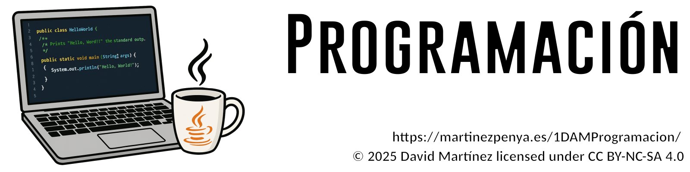

🚀 Información importante¶

📛 Denominación del curso¶
📚 Ciclo formativo de Grado Superior en Desarrollo de Aplicaciones Multiplataforma
☕ Programación (PRG)
📋 Contenidos¶
| Horas | ||
|---|---|---|
| Bloque | P R I M E R TRIMESTRE | 92 |
| B1 | UD01: Elementos de un programa informático | 20 |
| B2 | UD02: Utilización de Objetos | 18 |
| PRUEBA UNIDADES 1 Y 2 | 4 | |
| B3 | UD03: Estructuras de control y Excepciones | 20 |
| B4 | UD04: Estructuras de datos Arrays y matrices. Recursividad | 26 |
| 1a EVALUACIÓN | 4 | |
| S E G U N D O TRIMESTRE | 80 | |
| B5 | UD05: Desarrollo de clases | 26 |
| B6 | UD06: Lectura y escritura de información | 24 |
| B4 | UD07: Colecciones y Funciones Lambda | 26 |
| 2ª EVALUACIÓN | 4 | |
| T E R C E R TRIMESTRE | 84 | |
| B8 | UD08: Composición, Herencia y Polimorfismo | 24 |
| B9 | UD09: Creación de interfaces gráficas | 10 |
| B10 | UD10: Acceso a Bases de datos | 24 |
| B11 | UD11: BBDD OO | 18 |
| 3ª EVALUACIÓN | 4 | |
| CONVOCATÒRIA ORDINÀRIA | 4 | |
| T O T A L | 256 |
🎯 Resultados de Aprendizaje (RA)¶
| Descripció | Pes | AVA1 | AVA2 | AVA3 | FEE | T | UNITAT | Avaluació | |
|---|---|---|---|---|---|---|---|---|---|
| RA1 | Reconoce la estructura de un programa informático, identificando y relacionando los elementos propios del lenguaje de programación utilizado. | 10% | |||||||
| A | Se han identificado los bloques que componen la estructura de un programa informático. | 11% | 100% | 1 | =[[1AVA]] | ||||
| B | Se han creado proyectos de desarrollo de aplicaciones | 11% | 100% | 2 | =[[1AVA]] | ||||
| C | Se han utilizado entornos integrados de desarrollo. | 11% | 50% | 50% | 2 | =([[1AVA]]*0,5)+([[FEE]]*0,5) | |||
| D | Se han identificado los distintos tipos de variables y la utilidad específica de cada uno. | 11% | 20% | 30% | 50% | 1 | =([[1AVA]]*0,2)+([[2AVA]]*0,3)+([[3AVA]]*0,5) | ||
| E | Se ha modificado el código de un programa para crear y utilizar variables. | 11% | 20% | 30% | 50% | 1 | =([[1AVA]]*0,2)+([[2AVA]]*0,3)+([[3AVA]]*0,5) | ||
| F | Se han creado y utilizado constantes y literales. | 11% | 20% | 30% | 50% | 1 | =([[1AVA]]*0,2)+([[2AVA]]*0,3)+([[3AVA]]*0,5) | ||
| G | Se han clasificado, reconocido y utilizado en expresiones los operadores del lenguaje. | 11% | 20% | 30% | 50% | 1 | =([[1AVA]]*0,2)+([[2AVA]]*0,3)+([[3AVA]]*0,5) | ||
| H | Se ha comprobado el funcionamiento de las conversiones de tipo explícitas e implícitas. | 11% | 20% | 30% | 50% | 1 | =([[1AVA]]*0,2)+([[2AVA]]*0,3)+([[3AVA]]*0,5) | ||
| I | Se han introducido comentarios en el código. | 11% | 20% | 30% | 50% | 1 | =([[1AVA]]*0,2)+([[2AVA]]*0,3)+([[3AVA]]*0,5) |
| Descripció | Pes | AVA1 | AVA2 | AVA3 | FEE | T | UNITAT | Avaluació | |
|---|---|---|---|---|---|---|---|---|---|
| RA2 | Escribe y prueba programas sencillos, reconociendo y aplicando los fundamentos de la programación orientada a objetos. | 10% | |||||||
| A | Se han identificado los fundamentos de la programación orientada a objetos. | 11% | 100% | 2 | =[[1AVA]] | ||||
| B | Se han escrito programas simples. | 11% | 20% | 30% | 50% | 2 | =([[1AVA]]*0,2)+([[2AVA]]*0,3)+([[3AVA]]*0,5) | ||
| C | Se han instanciado objetos a partir de clases predefinidas. | 11% | 20% | 30% | 50% | 2 | =([[1AVA]]*0,2)+([[2AVA]]*0,3)+([[3AVA]]*0,5) | ||
| D | Se han utilizado métodos y propiedades de los objetos. | 11% | 20% | 30% | 50% | 2 | =([[1AVA]]*0,2)+([[2AVA]]*0,3)+([[3AVA]]*0,5) | ||
| E | Se han escrito llamadas a métodos estáticos. | 11% | 20% | 30% | 50% | 2 | =([[1AVA]]*0,2)+([[2AVA]]*0,3)+([[3AVA]]*0,5) | ||
| F | Se han utilizado parámetros en la llamada a métodos. | 11% | 20% | 30% | 50% | 2 | =([[1AVA]]*0,2)+([[2AVA]]*0,3)+([[3AVA]]*0,5) | ||
| G | Se han incorporado y utilizado librerías de objetos. | 11% | 20% | 30% | 50% | 2 | =([[1AVA]]*0,2)+([[2AVA]]*0,3)+([[3AVA]]*0,5) | ||
| H | Se han utilizado constructores. | 11% | 20% | 30% | 50% | 2 | =([[1AVA]]*0,2)+([[2AVA]]*0,3)+([[3AVA]]*0,5) | ||
| I | Se ha utilizado el entorno integrado de desarrollo en la creación y compilación de programas simples. | 11% | 5% | 15% | 30% | 50% | 2 | =([[1AVA]]*0,05)+([[2AVA]]*0,15)+([[3AVA]]*0,30)+([[FEE]]*0,50) |
| Descripció | Pes | AVA1 | AVA2 | AVA3 | FEE | T | UNITAT | Avaluació | |
|---|---|---|---|---|---|---|---|---|---|
| RA3 | Escribe y depura código, analizando y utilizando las estructuras de control del lenguaje. | 10% | |||||||
| A | Se ha escrito y probado código que haga uso de estructuras de selección. | 11% | 20% | 30% | 50% | 3 | =([[1AVA]]*0,2)+([[2AVA]]*0,3)+([[3AVA]]*0,5) | ||
| B | Se han utilizado estructuras de repetición. | 11% | 20% | 30% | 50% | 3 | =([[1AVA]]*0,2)+([[2AVA]]*0,3)+([[3AVA]]*0,5) | ||
| C | Se han reconocido las posibilidades de las sentencias de salto. | 11% | 20% | 30% | 50% | 3 | =([[1AVA]]*0,2)+([[2AVA]]*0,3)+([[3AVA]]*0,5) | ||
| D | Se ha escrito código utilizando control de excepciones. | 11% | 20% | 30% | 50% | 3 | =([[1AVA]]*0,2)+([[2AVA]]*0,3)+([[3AVA]]*0,5) | ||
| E | Se han creado programas ejecutables utilizando diferentes estructuras de control. | 11% | 20% | 30% | 50% | 3 | =([[1AVA]]*0,2)+([[2AVA]]*0,3)+([[3AVA]]*0,5) | ||
| F | Se han probado y depurado los programas. | 11% | 20% | 30% | 50% | 3 | =([[1AVA]]*0,2)+([[2AVA]]*0,3)+([[3AVA]]*0,5) | ||
| G | Se ha comentado y documentado el código. | 11% | 5% | 15% | 30% | 50% | 3 | =([[1AVA]]*0,05)+([[2AVA]]*0,15)+([[3AVA]]*0,30)+([[FEE]]*0,50) | |
| H | Se han creado excepciones. | 11% | 20% | 30% | 50% | 3 | =([[1AVA]]*0,2)+([[2AVA]]*0,3)+([[3AVA]]*0,5) | ||
| I | Se han utilizado aserciones para la detección y corrección de errores durante la fase de desarrollo. | 11% | 20% | 30% | 50% | 3 | =([[1AVA]]*0,2)+([[2AVA]]*0,3)+([[3AVA]]*0,5) |
| Descripció | Pes | AVA1 | AVA2 | AVA3 | FEE | T | UNITAT | Avaluació | |
|---|---|---|---|---|---|---|---|---|---|
| RA4 | Desarrolla programas organizados en clases analizando y aplicando los principios de la programación orientada a objetos. | 10% | |||||||
| A | Se ha reconocido la sintaxis, estructura y componentes típicos de una clase. | 11% | 50% | 50% | 5 | =([[2AVA]]*0,5)+([[3AVA]]*0,5) | |||
| B | Se han definido clases. | 11% | 50% | 50% | 5 | =([[2AVA]]*0,5)+([[3AVA]]*0,5) | |||
| C | Se han definido propiedades y métodos. | 11% | 50% | 50% | 5 | =([[2AVA]]*0,5)+([[3AVA]]*0,5) | |||
| D | Se han creado constructores. | 11% | 50% | 50% | 5 | =([[2AVA]]*0,5)+([[3AVA]]*0,5) | |||
| E | Se han desarrollado programas que instancien y utilicen objetos de las clases creadas anteriormente. | 11% | 50% | 50% | 5 | =([[2AVA]]*0,5)+([[3AVA]]*0,5) | |||
| F | Se han utilizado mecanismos para controlar la visibilidad de las clases y de sus miembros. | 11% | 50% | 50% | 5 | =([[2AVA]]*0,5)+([[3AVA]]*0,5) | |||
| G | Se han definido y utilizado clases heredadas. | 11% | 50% | 50% | 5 | =([[2AVA]]*0,5)+([[3AVA]]*0,5) | |||
| H | Se han creado y utilizado métodos estáticos. | 11% | 50% | 50% | 5 | =([[2AVA]]*0,5)+([[3AVA]]*0,5) | |||
| I | Se han creado y utilizado conjuntos y librerías de clases. | 11% | 50% | 50% | 5 | =([[2AVA]]*0,5)+([[3AVA]]*0,5) |
| Descripció | Pes | AVA1 | AVA2 | AVA3 | FEE | T | UNITAT | Avaluació | |
|---|---|---|---|---|---|---|---|---|---|
| RA5 | Realiza operaciones de entrada y salida de información, utilizando procedimientos específicos del lenguaje y librerías de clases. | 15% | |||||||
| A | Se ha utilizado la consola para realizar operaciones de entrada y salida de información. | 10% | 5% | 15% | 30% | 50% | 6 | =([[1AVA]]*0,05)+([[2AVA]]*0,15)+([[3AVA]]*0,30)+([[FEE]]*0,50) | |
| B | Se han aplicado formatos en la visualización de la información. | 10% | 20% | 30% | 50% | 6 | =([[1AVA]]*0,2)+([[2AVA]]*0,3)+([[3AVA]]*0,5) | ||
| C | Se han reconocido las posibilidades de entrada / salida del lenguaje y las librerías asociadas. | 10% | 50% | 50% | 6 | =([[2AVA]]*0,5)+([[3AVA]]*0,5) | |||
| D | Se han utilizado ficheros para almacenar y recuperar información. | 10% | 50% | 50% | 6 | =([[2AVA]]*0,5)+([[3AVA]]*0,5) | |||
| E | Se han creado programas que utilicen diversos métodos de acceso al contenido de los ficheros. | 10% | 50% | 50% | 6 | =([[2AVA]]*0,5)+([[3AVA]]*0,5) | |||
| F | Se han utilizado las herramientas del entorno de desarrollo para crear interfaces gráficos de usuario simples. | 20% | 25% | 50% | 25% | 9 | '=([[3AVA]]*0,25)+([[FEE]]*0,50)+(([[UD09_T01]]*0,25)+([[UD09_T02]]*0,25)+([[UD09_T03]]*0,5)*0,25) | ||
| G | Se han programado controladores de eventos. | 15% | 40% | 60% | 9 | '=([[3AVA]]*0,4)+(([[UD09_T01]]*0,25)+([[UD09_T02]]*0,25)+([[UD09_T03]]*0,5)*0,6) | |||
| H | Se han escrito programas que utilicen interfaces gráficos para la entrada y salida de información. | 15% | 40% | 60% | 9 | '=([[3AVA]]*0,4)+(([[UD09_T01]]*0,25)+([[UD09_T02]]*0,25)+([[UD09_T03]]*0,5)*0,6) |
| Descripció | Pes | AVA1 | AVA2 | AVA3 | FEE | T | UNITAT | Avaluació | |
|---|---|---|---|---|---|---|---|---|---|
| RA6 | Escribe programas que manipulen información seleccionando y utilizando tipos avanzados de datos. | 20% | |||||||
| A | Se han escrito programas que utilicen matrices (arrays). | 50% | 75% | 25% | 4 | =([[2AVA]]*0,5)+([[3AVA]]*0,50) | |||
| B | Se han reconocido las librerías de clases relacionadas con tipos de datos avanzados. | 5% | 100% | 7 | =[[3AVA]] | ||||
| C | Se han utilizado listas para almacenar y procesar información. | 5% | 100% | 7 | =[[3AVA]] | ||||
| D | Se han utilizado iteradores para recorrer los elementos de las listas. | 5% | 100% | 7 | =[[3AVA]] | ||||
| E | Se han reconocido las características y ventajas de cada una de la colecciones de datos disponibles. | 10% | 100% | 7 | =[[3AVA]] | ||||
| F | Se han creado clases y métodos genéricos. | 5% | 100% | 7 | =[[3AVA]] | ||||
| G | Se han utilizado expresiones regulares en la búsqueda de patrones en cadenas de texto. | 5% | 100% | 7 | =[[3AVA]] | ||||
| H | Se han identificado las clases relacionadas con el tratamiento de documentos escritos en diferentes lenguajes de intercambio de datos. | 5% | 100% | 7 | =([[UD08_T01]]*0,5)+([[UD08_T02]]*0,5) | ||||
| I | Se han realizado programas que realicen manipulaciones sobre documentos escritos en diferentes lenguajes de intercambio de datos. | 5% | 100% | 7 | =([[UD08_T01]]*0,5)+([[UD08_T02]]*0,5) | ||||
| J | Se han utilizado operaciones agregadas para el manejo de información almacenada en colecciones. | 5% | 100% | 7 | =[[3AVA]] |
| Descripció | Pes | AVA1 | AVA2 | AVA3 | FEE | T | UNITAT | Avaluació | |
|---|---|---|---|---|---|---|---|---|---|
| RA7 | Desarrolla programas aplicando características avanzadas de los lenguajes orientados a objetos y del entorno de programación. | 10% | |||||||
| A | Se han identificado los conceptos de herencia, superclase y subclase. | 10% | 100% | 8 | =[[3AVA]] | ||||
| B | Se han utilizado modificadores para bloquear y forzar la herencia de clases y métodos. | 10% | 100% | 8 | =[[3AVA]] | ||||
| C | Se ha reconocido la incidencia de los constructores en la herencia. | 10% | 100% | 8 | =[[3AVA]] | ||||
| D | Se han creado clases heredadas que sobrescriban la implementación de métodos de la superclase. | 10% | 100% | 8 | =[[3AVA]] | ||||
| E | Se han diseñado y aplicado jerarquías de clases. | 10% | 100% | 8 | =[[3AVA]] | ||||
| F | Se han probado y depurado las jerarquías de clases. | 10% | 100% | 8 | =[[3AVA]] | ||||
| G | Se han realizado programas que implementen y utilicen jerarquías de clases. | 10% | 100% | 8 | =[[3AVA]] | ||||
| H | Se ha comentado y documentado el código. | 10% | 50% | 50% | 8 | =([[3AVA]]*0,50)+([[FEE]]*0,50) | |||
| I | Se han identificado y evaluado los escenarios de uso de interfaces. | 10% | 100% | 8 | =[[3AVA]] | ||||
| J | Se han identificado y evaluado los escenarios de utilización de la herencia y la composición. | 10% | 100% | 8 | =[[3AVA]] |
| Descripció | Pes | AVA1 | AVA2 | AVA3 | FEE | T | UNITAT | Avaluació | |
|---|---|---|---|---|---|---|---|---|---|
| RA8 | Utiliza bases de datos orientadas a objetos, analizando sus características y aplicando técnicas para mantener la persistencia de la información. | 5% | |||||||
| A | Se han identificado las características de las bases de datos orientadas a objetos. | 13% | 100% | 11 | =([[UD11_T1]]*0,3)+([[UD11_T2]]*0,7) | ||||
| B | Se ha analizado su aplicación en el desarrollo de aplicaciones mediante lenguajes orientados a objetos. | 13% | 100% | 11 | =([[UD11_T1]]*0,3)+([[UD11_T2]]*0,7) | ||||
| C | Se han instalado sistemas gestores de bases de datos orientados a objetos. | 13% | 100% | 11 | =([[UD11_T1]]*0,3)+([[UD11_T2]]*0,7) | ||||
| D | Se han clasificado y analizado los distintos métodos soportados por los sistemas gestores para la gestión de la información almacenada. | 13% | 100% | 11 | =([[UD11_T1]]*0,3)+([[UD11_T2]]*0,7) | ||||
| E | Se han creado bases de datos y las estructuras necesarias para el almacenamiento de objetos. | 13% | 100% | 11 | =([[UD11_T1]]*0,3)+([[UD11_T2]]*0,7) | ||||
| F | Se han programado aplicaciones que almacenen objetos en las bases de datos creadas. | 13% | 100% | 11 | =([[UD11_T1]]*0,3)+([[UD11_T2]]*0,7) | ||||
| G | Se han realizado programas para recuperar, actualizar y eliminar objetos de las bases de datos. | 13% | 100% | 11 | =([[UD11_T1]]*0,3)+([[UD11_T2]]*0,7) | ||||
| H | Se han realizado programas para almacenar y gestionar tipos de datos estructurados, compuestos y relacionados. | 13% | 100% | 11 | =([[UD11_T1]]*0,3)+([[UD11_T2]]*0,7) |
| Descripció | Pes | AVA1 | AVA2 | AVA3 | FEE | T | UNITAT | Avaluació | |
|---|---|---|---|---|---|---|---|---|---|
| RA9 | Gestiona información almacenada en bases de datos relacionales manteniendo la integridad y consistencia de los datos. | 10% | |||||||
| A | Se han identificado las características y métodos de acceso a sistemas gestores de bases de datos relacionales. | 14% | 100% | 10 | =([[UD10_T1]]*0,2)+([[UD10_T2]]*0,3)+([[UD10_T3]]*0,5) | ||||
| B | Se han programado conexiones con bases de datos. | 14% | 100% | 10 | =([[UD10_T1]]*0,2)+([[UD10_T2]]*0,3)+([[UD10_T3]]*0,5) | ||||
| C | Se ha escrito código para almacenar información en bases de datos. | 14% | 100% | 10 | =([[UD10_T1]]*0,2)+([[UD10_T2]]*0,3)+([[UD10_T3]]*0,5) | ||||
| D | Se han creado programas para recuperar y mostrar información almacenada en bases de datos. | 14% | 100% | 10 | =([[UD10_T1]]*0,2)+([[UD10_T2]]*0,3)+([[UD10_T3]]*0,5) | ||||
| E | Se han efectuado borrados y modificaciones sobre la información almacenada. | 14% | 100% | 10 | =([[UD10_T1]]*0,2)+([[UD10_T2]]*0,3)+([[UD10_T3]]*0,5) | ||||
| F | Se han creado aplicaciones que muestren la información almacenada en bases de datos. | 14% | 50% | 50% | 10 | =([[UD10_T1]]*0,05)+([[UD10_T2]]*0,15)+([[UD10_T3]]*0,3)+([[FEE]]*0,5) | |||
| G | Se han creado aplicaciones para gestionar la información presente en bases de datos relacionales. | 14% | 50% | 50% | 10 | =([[UD10_T1]]*0,05)+([[UD10_T2]]*0,15)+([[UD10_T3]]*0,3)+([[FEE]]*0,5) |
📜 Legislación vigente¶
- 📄
RD 450/2010, BOE 20-05-2010(Antigua ley) - 📄 RD 405/2023 29-05-2023
- 📄 RD 500/2024, BOE 21-05-2024
- 📄
Currículum C.V.: ORDE 58/2012, de 5 de setembre (DOGV núm. 6868, 24.09.2012)(Antiguo) - 📄 Propuesta de Decreto del Consell
- 🕒
Horario(Antigua ley) - 🕒 Horario
📝 Evaluación¶
-
🔍 La evaluación del módulo se realizará con base en los Resultados de Aprendizaje (RA) definidos en el currículo del ciclo formativo de Grado Superior en Desarrollo de Aplicaciones Multiplataforma. Cada RA estará asociado a criterios de evaluación (CE) que serán los que determinen el grado de adquisición de las competencias previstas para el módulo.
-
📊 La nota final del módulo se obtendrá a partir de la ponderación de los RA, como se mencionó anteriormente. Cada RA será evaluado de forma independiente, con calificaciones en una escala de 0 a 10.
-
✅ El alumno debe obtener al menos una nota de 5 en cada RA para aprobar el módulo.
-
🔄 Si un alumno obtiene menos de un 5 en algún RA, tendrá que recuperarlo mediante las actividades/exámenes de recuperación diseñadas específicamente para esos resultados de aprendizaje.
-
📊En programación los primeros RA’s se distribuyen entre las 3 evaluaciones, así que tener una buena nota en la primera evaluación no quiere decir que has aprobado los RA de esa evaluación.
-
❗NUEVO SISTEMA DUAL!! → Busca tu empresa! 120H (aproximadamente en el mes de mayo, también a partir del 2º trimestre por las mañanas)
⚠️ IMPORTANTE:
- ❗ Aprobar las distintas evaluaciones no garantiza aprobar el curso.
- 📌 Puedes aprobar (y con muy buena nota) las dos evaluaciones, tener un
RAsuspendido y por tanto suspender el módulo.